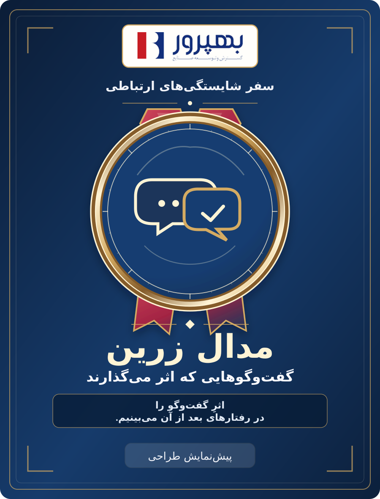

مشاهده نشان زرین در ابعاد اصلیمجموعه نشانهای سفر شایستگیهای ارتباطی
این صفحه پیشنمایش واقعی الگوی طراحی فعلی اپ است؛ هیچیک از نشانهای نمایشی به معنای کسب آنها توسط شرکتکننده نیست. دریافت فایل رسمی پس از کسب هر نشان در مسیر رقابتی فعال میشود.
مدالهای پایان سفر
ده نشان مهارت فردی
«شروع محترمانه، وقتی مؤثر است که انتظار کاری هم روشن باشد.»
کسبشده«پیام شفاف، خروجی و مسئول و موعدِ مبهم ندارد.»
کسبشده«برای فهمیدن، پیش از پاسخدادن بپرس.»
کسبشده«لحن درست، به پیام روشن قدرت میدهد.»
کسبشده«بازخورد سازنده از رفتار میگوید، نه شخصیت.»
کسبشده«قاطعیت یعنی مرز روشن همراه با احترام.»
کسبشده«هماهنگی یعنی تبدیل درخواست به تعهد مشترک.»
کسبشده«نهگفتن حرفهای، از وعده غیرواقعی جلوگیری میکند.»
کسبشده«اعتماد با پاسخگویی و پیگیری بازمیگردد.»
کسبشده«توافق خوب، قابل اجرا و قابل پیگیری است.»
کسبشدهقواعد دریافت مدال بر اساس امتیاز نهایی و حداقل امتیاز آزمونهای تصمیمگیری است؛ نشانهای فردی پس از تکمیل هر مهارت صادر میشوند. این صفحه صرفاً برای مشاهده طراحی، مستقل از نتیجه آزمون است.